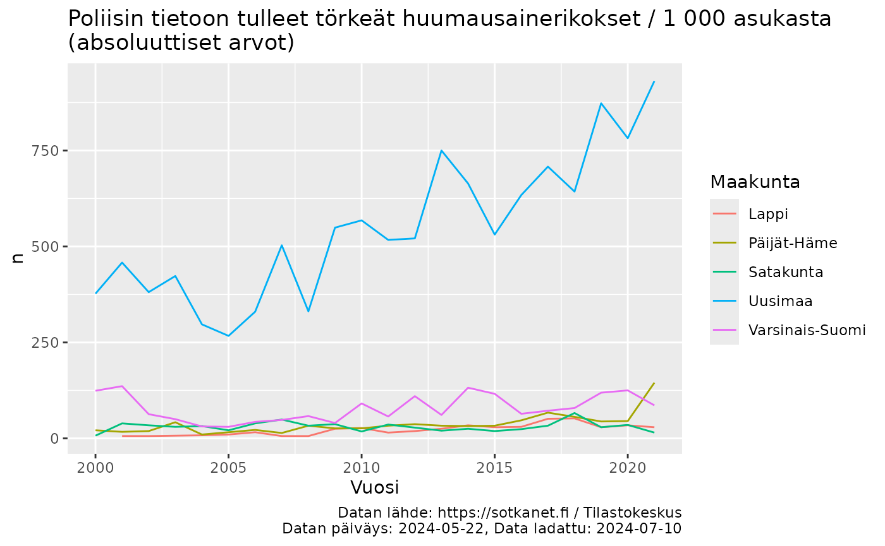
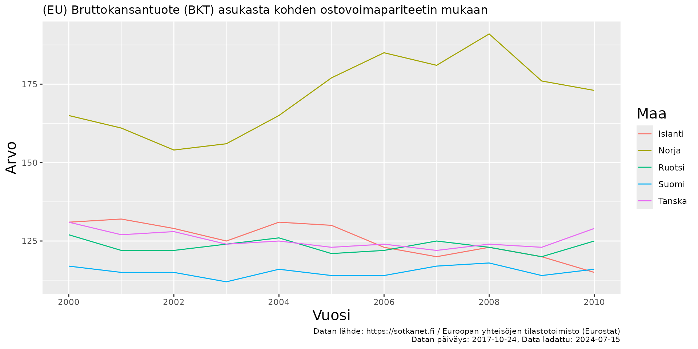
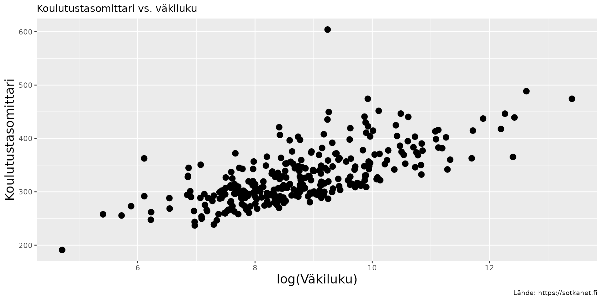
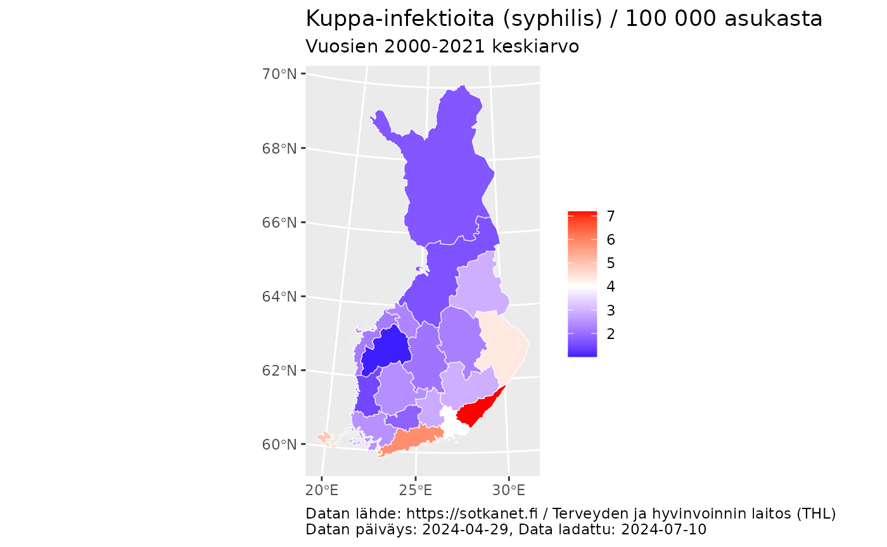

Sotkanetin avoimen rajapinnan R-työkalut
Source:vignettes/articles/tutorial_fi.Rmd
tutorial_fi.RmdPaketin esittely
Sotkanetin avoin rajapinta mahdollistaa pääsyn yli kahteen tuhanteen väestöindikaattoriin Suomesta ja Euroopasta. Palvelua ylläpitää Terveyden ja hyvinvoinnin laitos (THL). Lisätietoa palvelusta ja kuvaus avoimesta rajapinnasta.
Tämän sotkanet paketin käyttäjät pystyvät hakemaan
Sotkanetin dataa rajapinnasta suoraan R:ään ja hyödyntämään dataa
analyyseissa ja visualisoinneissa. Paketti on kehitetty osana rOpenGov-kehittäjäyhteisöä.
Paketin asennus
Paketin vakaan, viimeisimmän CRANissa julkaistun version asentaminen on useimmille käyttäjille suositeltavin vaihtoehto. Paketin uusimman CRANissa julkaistun version voi asentaa komennolla:
install.packages("sotkanet")Joissakin tapauksissa voi olla hyödyllistä asentaa paketin vanha versio. CRAN ylläpitää jokaisesta CRANissa julkaistusta paketista arkistoa, johon pääsee esimerkiksi sotkanet-paketin CRAN-sivulla klikkaamalla Old sources: sotkanet archive -linkkiä.
install.packages("https://cran.r-project.org/src/contrib/Archive/sotkanet/sotkanet_0.9.76.tar.gz", repos=NULL, type="source")Paketin kehitysversion voi asentaa GitHubista seuraavilla tavoilla:
library(remotes)
remotes::install_github("ropengov/sotkanet")
# Tietyn git branchin, tässä tapauksessa 'v0.10-dev' -nimisen branchin version asentaminen
remotes::install_github("ropengov/sotkanet@v0.10-dev")
# Tietyn pull requestin, tässä tapauksessa PR 26 "Add check for region.code length" mukaisen version asentaminen
remotes::install_github("ropengov/sotkanet", ref = remotes::github_pull("26"))
remotes::install_github("ropengov/sotkanet#26")remotes-paketin käyttäminen vaatii Githubin Personal
Access Tokenin (PAT) määrittelyn. Ohjeita tähän löytyy esimerkiksi
usethis-paketin artikkelista.
Asennuksen onnistumista voi testata lataamalla paketin:
Paketin käyttö
Käytettävissä olevat indikaattorit ja aluejaot
Aloitetaan lataamalla tarvittavat paketit:
Käytettävissä olevat indikaattorit voi listata käyttämällä funktiota
sotkanet_indicators():
# Ladataan muutama esimerkki-indikaattori
indicators <- sotkanet_indicators(id = c(4, 5, 6, 127, 10012, 10027), type = "table")
# Visualisoidaan taulukkomuodossa
kable(indicators)| indicator | indicator.title | indicator.organization | indicator.organization.title |
|---|---|---|---|
| 4 | Mielenterveyden häiriöihin sairaalahoitoa saaneet 0 - 17-vuotiaat / 1 000 vastaavan ikäistä | 2 | Terveyden ja hyvinvoinnin laitos (THL) |
| 5 | Toimeentulotukea saaneet 25 - 64-vuotiaat, % vastaavan ikäisestä väestöstä | 2 | Terveyden ja hyvinvoinnin laitos (THL) |
| 6 | Somaattisen erikoissairaanhoidon vuodeosastohoitopäivät 75 vuotta täyttäneillä / 1 000 vastaavan ikäistä | 2 | Terveyden ja hyvinvoinnin laitos (THL) |
| 127 | Väestö 31.12. | 3 | Tilastokeskus |
| 10012 | (EU) Bruttokansantuote (BKT) asukasta kohden ostovoimapariteetin mukaan | 58 | Euroopan yhteisöjen tilastotoimisto (Eurostat) |
| 10027 | (EU) Vakioitu itsemurhakuolleisuus / 100 000 asukasta | 58 | Euroopan yhteisöjen tilastotoimisto (Eurostat) |
Kuten listauksesta voidaan huomata, Sotkanet APIsta löytyy THL:n omien indikaattoreiden lisäksi myös monien muiden viranomaisten, esimerkiksi Kansaneläkelaitoksen ja Tilastokeskuksen, tuottamia indikaattoreita. Käyttäjän on syytä olla huolellinen viitatessaan dataan.
Maantieteelliset alueet voi listata käyttämällä funktiota
sotkanet_regions():
# Ladataan kaikki sotkanetin käyttämät alueet
regions <- sotkanet_regions(type = "table")
# Visualisoidaan kuusi ensimmäistä aluetta taulukkomuodossa
kable(head(regions))| region | region.title | region.code | region.category | region.uri |
|---|---|---|---|---|
| 833 | Etelä-Suomen AVIn alue | 1 | ALUEHALLINTOVIRASTO | http://www.yso.fi/onto/kunnat/ahv1 |
| 834 | Lounais-Suomen AVIn alue | 2 | ALUEHALLINTOVIRASTO | http://www.yso.fi/onto/kunnat/ahv2 |
| 835 | Itä-Suomen AVIn alue | 3 | ALUEHALLINTOVIRASTO | http://www.yso.fi/onto/kunnat/ahv3 |
| 836 | Länsi- ja Sisä-Suomen AVIn alue | 4 | ALUEHALLINTOVIRASTO | http://www.yso.fi/onto/kunnat/ahv4 |
| 837 | Pohjois-Suomen AVIn alue | 5 | ALUEHALLINTOVIRASTO | http://www.yso.fi/onto/kunnat/ahv5 |
| 838 | Lapin AVIn alue | 6 | ALUEHALLINTOVIRASTO | http://www.yso.fi/onto/kunnat/ahv6 |
Sotkanet datan lataaminen
Datan lataamiseksi tarvitaan indikaattorin tunniste. Oikean
indikaattorin hakemiseen voi käyttää edellä mainittua
sotkanet_indicators funktiota, indikaattorin lataamisessa
käytetään indicator-sarakkeesta löytyvää numeerista
tunnistetta. Indikaattorin etsimiseen voi käyttää myös Sotkanetin
nettisivuja.
Esimerkiksi indikaattoritunniste 5 vastaa “Toimeentulotukea saaneet
25 - 64-vuotiaat, % vastaavan ikäisestä väestöstä” -datasettiä. Datan
voi ladata käyttämllä get_sotkanet() funktiota. Datasetin
hyvinvointialueittaisen datan vuosilta 2000-2010 saa komennolla:
# Indikaattorin datan hakeminen
dat_5 <- get_sotkanet(indicators = 5, years = 2000:2010,
genders = c("total"), region.category = "HYVINVOINTIALUE")
# Datan kuusi ensimmäistä riviä
kable(head(dat_5)) %>%
kable_styling() %>%
scroll_box(width = "100%")| indicator | region | year | gender | primary.value | absolute.value | indicator.title | region.title | region.code | region.category | indicator.organization.title |
|---|---|---|---|---|---|---|---|---|---|---|
| 5 | 966 | 2003 | total | 5.8 | 5636 | Toimeentulotukea saaneet 25 - 64-vuotiaat, % vastaavan ikäisestä väestöstä | Keski-Uudenmaan hyvinvointialue | 02 | HYVINVOINTIALUE | Terveyden ja hyvinvoinnin laitos (THL) |
| 5 | 975 | 2007 | total | 6.6 | 7434 | Toimeentulotukea saaneet 25 - 64-vuotiaat, % vastaavan ikäisestä väestöstä | Päijät-Hämeen hyvinvointialue | 09 | HYVINVOINTIALUE | Terveyden ja hyvinvoinnin laitos (THL) |
| 5 | 964 | 2008 | total | 4.8 | 1674 | Toimeentulotukea saaneet 25 - 64-vuotiaat, % vastaavan ikäisestä väestöstä | Keski-Pohjanmaan hyvinvointialue | 18 | HYVINVOINTIALUE | Terveyden ja hyvinvoinnin laitos (THL) |
| 5 | 977 | 2002 | total | 8.7 | 10789 | Toimeentulotukea saaneet 25 - 64-vuotiaat, % vastaavan ikäisestä väestöstä | Vantaan ja Keravan hyvinvointialue | 04 | HYVINVOINTIALUE | Terveyden ja hyvinvoinnin laitos (THL) |
| 5 | 963 | 2010 | total | 6.1 | 5598 | Toimeentulotukea saaneet 25 - 64-vuotiaat, % vastaavan ikäisestä väestöstä | Kanta-Hämeen hyvinvointialue | 07 | HYVINVOINTIALUE | Terveyden ja hyvinvoinnin laitos (THL) |
| 5 | 972 | 2005 | total | 9.1 | 8330 | Toimeentulotukea saaneet 25 - 64-vuotiaat, % vastaavan ikäisestä väestöstä | Pohjois-Karjalan hyvinvointialue | 14 | HYVINVOINTIALUE | Terveyden ja hyvinvoinnin laitos (THL) |
Sotkanet APIsta löytyy myös monien muiden viranomaisten, esimerkiksi Kansaneläkelaitoksen ja Tilastokeskuksen, tuottamia indikaattoreita.
# Indikaattorin datan hakeminen
dat_3090 <- get_sotkanet(indicators = 3090, years = 2000:2021,
genders = c("total"), region.category = "MAAKUNTA",
regions = c("Uusimaa", "Varsinais-Suomi", "Satakunta", "Päijät-Häme", "Lappi"))
dat_3090_meta <- sotkanet_indicator_metadata(3090)
# Datan kuusi ensimmäistä riviä
kable(head(dat_3090)) %>%
kable_styling() %>%
scroll_box(width = "100%")| indicator | region | year | gender | primary.value | absolute.value | indicator.title | region.title | region.code | region.category | indicator.organization.title |
|---|---|---|---|---|---|---|---|---|---|---|
| 3090 | 493 | 2005 | total | 0.1 | 16 | Poliisin tietoon tulleet törkeät huumausainerikokset / 1 000 asukasta | Päijät-Häme | 07 | MAAKUNTA | Tilastokeskus |
| 3090 | 490 | 2012 | total | 0.1 | 28 | Poliisin tietoon tulleet törkeät huumausainerikokset / 1 000 asukasta | Satakunta | 04 | MAAKUNTA | Tilastokeskus |
| 3090 | 505 | 2021 | total | 0.2 | 29 | Poliisin tietoon tulleet törkeät huumausainerikokset / 1 000 asukasta | Lappi | 19 | MAAKUNTA | Tilastokeskus |
| 3090 | 490 | 2021 | total | 0.1 | 15 | Poliisin tietoon tulleet törkeät huumausainerikokset / 1 000 asukasta | Satakunta | 04 | MAAKUNTA | Tilastokeskus |
| 3090 | 488 | 2006 | total | 0.2 | 330 | Poliisin tietoon tulleet törkeät huumausainerikokset / 1 000 asukasta | Uusimaa | 01 | MAAKUNTA | Tilastokeskus |
| 3090 | 488 | 2020 | total | 0.5 | 782 | Poliisin tietoon tulleet törkeät huumausainerikokset / 1 000 asukasta | Uusimaa | 01 | MAAKUNTA | Tilastokeskus |
ggplot(dat_3090, aes(x = year, y = absolute.value, color = region.title)) +
geom_line() +
labs(x = "Vuosi", y = "n", title = paste0(dat_3090_meta$title$fi, "\n(absoluuttiset arvot)"), color = "Maakunta",
caption = paste0(
"Datan lähde: https://sotkanet.fi / ", dat_3090_meta$organization$title$fi, "\n", "Datan päiväys: ", dat_3090_meta$`data-updated`, ", Data ladattu: ", Sys.Date())) ### Datan hakeminen interaktiivisella funktiolla
Datan hakemiseen voi myös käyttää interaktiivista
sotkanet_interactive() funktiota, joka tarjoaa käyttäjälle
interaktiivisen ja helppokäyttöisen vaihtoehdon datan lataamiselle.
Interaktiivisen funktion tarkoituksena on paitsi helpottaa datan
hakemista, myös edistää hyviä käytäntöjä, kuten datalähteisiin
viittaaminen, datan latausskriptin tallentaminen ja taulukolle lasketun
tarkistussumman laskeminen.
Datan interaktiivinen hakeminen näyttää pääpiirteissään seuraavanlaiselta:
> sotkanet_interactive()
Select language
1: Finnish
2: English
3: Swedish
Selection: 1
Enter search id for the data: 3090
Is this the right dataset?
1: Poliisin tietoon tulleet törkeät huumausainerikokset / 1 000 asukasta
2: No
Selection: 1
Download the dataset?
1: Yes
2: No
Selection: 1
Would you like to use default arguments or manually select them?
1: Default
2: Manually selected
Selection: 2
Enter the beginning year for the data: 2000
Enter the ending year for the data: 2005
Which genders do you want for the data?
1: Male
2: Female
3: Male & Female
4: Total
5: All
Selection: 4
Print dataset citation?
1: Yes
2: No
Selection: 1
Print the code for downloading dataset?
1: Yes
2: No
Selection: 1
Print dataset fixity checksum?
1: Yes
2: No
Selection: 1
#### DATASET CITATION:
@Misc{,
title = {Poliisin tietoon tulleet törkeät huumausainerikokset / 1 000 asukasta},
url = {https://sotkanet.fi/sotkanet/fi/metadata/indicators/3090},
organization = {Tilastokeskus},
year = {2024},
urldate = {2024-06-24},
type = {Dataset},
note = {Accessed 2024-06-24, dataset last updated 2024-05-22},
}
#### DOWNLOAD PARAMETERS:
[1] "get_sotkanet(indicators = 3090, years = 2000:2005, genders = c('total'), regions = NULL, region.category = NULL, lang = 'fi')"
#### FIXITY CHECKSUM:
[1] "Fixity checksum (md5) for dataset 3090: 7c13cceb2b63d77685cec243ba3e7a13"
indicator region year gender primary.value absolute.value indicator.title
1 3090 966 2003 total 0.2 41 Poliisin tietoon tulleet törkeät huumausainerikokset / 1 000 asukasta
2 3090 838 2005 total 0.1 10 Poliisin tietoon tulleet törkeät huumausainerikokset / 1 000 asukasta
3 3090 611 2004 total 0.0 12 Poliisin tietoon tulleet törkeät huumausainerikokset / 1 000 asukasta
4 3090 242 2000 total 0.3 5 Poliisin tietoon tulleet törkeät huumausainerikokset / 1 000 asukasta
5 3090 161 2002 total 0.1 10 Poliisin tietoon tulleet törkeät huumausainerikokset / 1 000 asukasta
[...]Tarkempien rajauksien tekeminen indikaattoreihin saattaa johtaa seuraavanlaiseen varoitusviestiin:
Warning message:
In get_sotkanet(indicators = search_id, years = years, genders = gender_selection, :
The data.frame is emptyViesti johtuu usein siitä, että valitussa indikaattorissa ei ole esimerkiksi dataa valitulta aikaväliltä, tiettyä haluttua aluetta tai dataa tietyiltä sukupuoliryhmiltä. Varoitusviestin voi välttää useimmissa tapauksissa lataamalla kaiken datan (‘default arguments’) eli jättämällä manuaaliset rajaukset tekemättä datan lataamisvaiheessa. Dataa voi suodattaa lataamisen jälkeen omalla koneella.
Dataan viittaaminen
Mille tahansa indikaattorille voi tulostaa viitteen käyttämällä
sotkanet_cite() funktiota. Esimerkiksi edellä käytetyn
toimeentulotukidatan viitauksen printtaaminen onnistuu helposti
komennolla:
sotkanet_cite(5)
#> @Misc{,
#> title = {Toimeentulotukea saaneet 25 - 64-vuotiaat, % vastaavan ikäisestä väestöstä},
#> url = {https://sotkanet.fi/sotkanet/fi/metadata/indicators/5},
#> organization = {Terveyden ja hyvinvoinnin laitos (THL)},
#> year = {2024},
#> urldate = {2024-07-15},
#> type = {Dataset},
#> note = {Accessed 2024-07-15, dataset last updated 2024-05-08},
#> }sotkanet_cite funktio mahdollistaa dataviittausten
helpon luomisen muillakin myös muilla rajapinnan tukemilla kielillä:
sotkanet_cite(5, lang = "sv")
#> @Misc{,
#> title = {25 - 64-åriga mottagare av utkomststöd, % av befolkningen i samma ålder},
#> url = {https://sotkanet.fi/sotkanet/sv/metadata/indicators/5},
#> organization = {Institutet för hälsa och välfärd (THL)},
#> year = {2024},
#> urldate = {2024-07-15},
#> type = {Dataset},
#> note = {Accessed 2024-07-15, dataset last updated 2024-05-08},
#> }
sotkanet_cite(5, lang = "en")
#> @Misc{,
#> title = {Social assistance recipients aged 25-64, as % of total population of same age},
#> url = {https://sotkanet.fi/sotkanet/en/metadata/indicators/5},
#> organization = {Finnish institute for Health and Welfare (THL)},
#> year = {2024},
#> urldate = {2024-07-15},
#> type = {Dataset},
#> note = {Accessed 2024-07-15, dataset last updated 2024-05-08},
#> }Esimerkkejä
Käydään seuraavaksi läpi paketin käyttöä kolmen esimerkin avulla.
Pohjoismaiden väliset erot
Ensimmäisessä esimerkissä verrataan pohjoismaiden välisiä eroja Eurostatin tuottamassa BKT-datassa vuosina 2000-2010.
# Indikaattorin datan hakeminen
dat <- get_sotkanet(indicators = 10012, years = 2000:2010,
genders = "total", region.category = "POHJOISMAAT")
indicator_name <- as.character(unique(dat$indicator.title))
indicator_source <- as.character(unique(dat$indicator.organization.title))
# Metadatan hakeminen
dat_meta <- sotkanet_indicator_metadata(10012)
# Visualisointi
library(ggplot2)
p <- ggplot(dat, aes(x = year, y = primary.value,
group = region.title, color = region.title)) +
geom_line() + ggtitle(paste0(indicator_name)) +
labs(x = "Vuosi", y = "Arvo", color = "Maa", caption = paste0(
"Datan lähde: https://sotkanet.fi / ", indicator_source, "\n", "Datan päiväys: ", dat_meta$`data-updated`, ", Data ladattu: ", Sys.Date())) +
scale_x_continuous(breaks = seq(2000,2010, by = 2)) +
theme(title = element_text(size = 10)) +
theme(axis.title.x = element_text(size = 15)) +
theme(axis.title.y = element_text(size = 15)) +
theme(legend.title = element_text(size = 15))
print(p)
Dataviittaus indikaattorille 10012:
sotkanet_cite(10012)
#> @Misc{,
#> title = {(EU) Bruttokansantuote (BKT) asukasta kohden ostovoimapariteetin mukaan},
#> url = {https://sotkanet.fi/sotkanet/fi/metadata/indicators/10012},
#> organization = {Euroopan yhteisöjen tilastotoimisto (Eurostat)},
#> year = {2017},
#> urldate = {2024-07-15},
#> type = {Dataset},
#> note = {Accessed 2024-07-15, dataset last updated 2017-10-24},
#> }Suomen kuntien väkiluvun yhteys koulutustasomittarin arvoon
Toisessa esimerkissä tarkastellaan Suomen kuntien väkiluvun yhteyttä kunnan koulutustasomittarin arvoon.
# Datan hakeminen indikaattoreille
dat <- get_sotkanet(indicators = c(127, 180),
years = 2022, genders = c("total"), region.category = c("KUNTA"))
# Valitaan mielenkiinnon kohteena olevat sarakkeet ja poistetaan päällekkäisyydet
datf <- dat[,c("region.title", "indicator.title", "primary.value")]
datf <- datf[!duplicated(datf),]
dw <- reshape(datf, idvar = "region.title",
timevar = "indicator.title", direction = "wide")
names(dw) <- c("Municipality", "Population", "Education_level")
# Visualisointi
p <- ggplot(dw, aes(x = log(Population), y = Education_level)) + geom_point(size = 3) +
ggtitle("Koulutustasomittari vs. väkiluku") +
theme(title = element_text(size = 10)) +
labs(x = "log(Väkiluku)", y = "Koulutustasomittari",
caption = "Lähde: https://sotkanet.fi") +
theme(axis.title.x = element_text(size = 15)) +
theme(axis.title.y = element_text(size = 15)) +
theme(legend.title = element_text(size = 15))
plot(p)
Dataviittaukset indikaattoreille 127 ja 180:
sotkanet_cite(127)
#> @Misc{,
#> title = {Väestö 31.12.},
#> url = {https://sotkanet.fi/sotkanet/fi/metadata/indicators/127},
#> organization = {Tilastokeskus},
#> year = {2024},
#> urldate = {2024-07-15},
#> type = {Dataset},
#> note = {Accessed 2024-07-15, dataset last updated 2024-04-26},
#> }
sotkanet_cite(180)
#> @Misc{,
#> title = {Koulutustasomittain},
#> url = {https://sotkanet.fi/sotkanet/fi/metadata/indicators/180},
#> organization = {Tilastokeskus},
#> year = {2023},
#> urldate = {2024-07-15},
#> type = {Dataset},
#> note = {Accessed 2024-07-15, dataset last updated 2023-10-11},
#> }Infektioiden määrä maakunnittain
Lopuksi demonstroimme sotkanet-datan lataamista ja visualisoimista
kartalle, tässä tapauksessa maakunnittain. Tilastokeskuksen tarjoamien
kartta-aineistojen lataamiseen käytämme toista rOpenGov-pakettia,
geofi-pakettia.
Ns. teemakarttojen tapauksessa on hyvä muistaa visualisointitavan rajoitteet: Pinta-alaltaan suuret ja mahdollisesti harvaan asutut alueet saattavat ylikorostua kun taas pienet ja tiheästi asutut alueet saattavat olla vaikeasti tulkittavia. Pidemmän ajan aikasarjojen visualisointi teemakarttamuodossa on hieman väkinäinen ratkaisu, eikä alla olevan esimerkin mukainen keskiarvojen laskeminen ole aina välttämättä kovin mielekästä. Karttavisualisoinneilla on kuitenkin myös hyvät puolensa, kuten niiden luomisen helppous ja kohtalaisen helppo tulkittavuus, joten niitä ei tule myöskään väheksyä.
library(geofi)
library(dplyr)
#>
#> Attaching package: 'dplyr'
#> The following object is masked from 'package:kableExtra':
#>
#> group_rows
#> The following objects are masked from 'package:stats':
#>
#> filter, lag
#> The following objects are masked from 'package:base':
#>
#> intersect, setdiff, setequal, union
# codes_as_characters = TRUE tarvitaan jotta aluekoodit palautetaan
# tekstimuodossa (esim. "01") eikä kokonaislukuina (esim. 1)
polygon <- geofi::get_municipality_pop(year = 2021, codes_as_character = TRUE)
#> Requesting response from: http://geo.stat.fi/geoserver/wfs?service=WFS&version=1.0.0&request=getFeature&typename=vaestoalue%3Akunta_vaki2021
#> Warning: Coercing CRS to epsg:3067 (ETRS89 / TM35FIN)
#> Data is licensed under: Attribution 4.0 International (CC BY 4.0)
# Yhdistetään kunta-polygonit maakunta-polygoneiksi
regions <- polygon %>% dplyr::group_by(maakunta_name_fi, maakunta_code) %>%
dplyr::summarise(vaesto = sum(vaesto))
#> `summarise()` has grouped output by 'maakunta_name_fi'. You can override using
#> the `.groups` argument.
# Indikaattorin datan hakeminen
dat_3165 <- get_sotkanet(indicators = 3165, years = 2000:2021,
genders = c("total"), region.category = "MAAKUNTA")
# Lasketaan uusi muuttuja, tapausten lukumäärän keskiarvo koko ajanjakson ajalta
dat_3165_mean <- dat_3165 %>%
dplyr::group_by(region.code) %>%
dplyr::summarize(mean_cases_per_annum = mean(primary.value))
dat_3165_meta <- sotkanet_indicator_metadata(3165)
regions_and_dat <- dplyr::left_join(regions, dat_3165_mean, by = c("maakunta_code" = "region.code"))
# Teemakartta ggplotilla
ggplot(regions_and_dat) +
geom_sf(aes(fill = mean_cases_per_annum), color = "white", size = 0.5) +
labs(title = dat_3165_meta$title$fi, subtitle = "Vuosien 2000-2021 keskiarvo", color = "", caption = paste0(
"Datan lähde: https://sotkanet.fi / ", dat_3165_meta$organization$title$fi, "\n", "Datan päiväys: ", dat_3165_meta$`data-updated`, ", Data ladattu: ", Sys.Date())) +
# theme_void() +
scale_fill_gradient2(name = "", midpoint = 4, low = "blue", mid = "white", high = "red") +
theme(plot.caption = element_text(hjust = 0))
Lähdeviite alkuperäiseen, Sotkanet API:sta ladattuun dataan:
sotkanet_cite(3165)
#> @Misc{,
#> title = {Kuppa-infektioita (syphilis) / 100 000 asukasta},
#> url = {https://sotkanet.fi/sotkanet/fi/metadata/indicators/3165},
#> organization = {Terveyden ja hyvinvoinnin laitos (THL)},
#> year = {2024},
#> urldate = {2024-07-15},
#> type = {Dataset},
#> note = {Accessed 2024-07-15, dataset last updated 2024-04-29},
#> }THL:n CC BY 4.0 -lisenssin mukaisesti on myös hyvä mainita, että
datan perusteella laskettiin uusi, tapausten keskiarvoa kuvaava muuttuja
mean_cases_per_annum.
Lisensointi ja viittaminen
Sotkanetin data
Viittaa Sotkanetiin ja jaa linkki https://sotkanet.fi/sotkanet/fi/index.
Muista myös mainita indikaattorin datan tuottaja (sarakkeesta
indicator.organization.title).
- THL:n avoimen datan lisenssi ja vastuuvapauslauseke.
- Sotkanet - Tietoa palvelusta - Avoin rajapinta
- Sotkanet - Tietoa palvelusta - Tietojen hyödyntäminen ja viittaus
Keskeiset kohdat tiivistettynä:
- “Sotkanet REST API on tarkoitettu tietojen noutamiseen erissä niiden jatkokäyttöä varten eri sovelluksissa. Rajapintaa ei ole tarkoitettu suoraan, online käyttöön.”
- “THL voi määrittelemänänsä hetkenä käynnistää palvelun uudelleen tai sammuttaa sen huoltokatkoa varten. Huoltokatkoista ja muista suunnitelluista katkoista pyritään tiedottamaan Sotkanetin kautta. Käyttökatkoista ei ilmoiteta suoraan rajapinnan käyttäjille.”
- “Sotkanetin rajapinnan kautta saatavia tietoja saa käyttää vapaasti muiden järjestelmien tietopohjana.”
- “Rajapintaa käytetään omalla vastuulla. THL tuottaa rajapinnan sellaisenaan ilman takuita. THL pidättää oikeuden rajapinnan muutoksiin. THL ei vastaa rajapintaa käyttävien sovellusten toiminnasta.”
- THL:n itse tuottamia tilastotietoja ja indikaattoreita koskee THL:n oma avoimen datan lisenssi ja vastuuvapauslauseke. Mikäli data on jonkin toisen organisaation, esimerkiksi Eurostatin, tuottama, tarkista datan käyttöehdot kyseessä olevan organisaation omilta sivuilta.
Sotkanetin käyttöohjeissa annetaan seuraavanlainen viittausohje:
Tilasto- ja indikaattoripankki Sotkanet. Terveyden ja hyvinvoinnin laitos. 0 - 17-vuotiaat lapset, joista on tehty lastensuojeluilmoitus, % vastaavan ikäisestä väestöstä (THL) (ind. 1086). Viitattu 10.6.2023.
Statistik- och indikatorbanken Sotkanet. Institutet för hälsa och välfärd. Psykiatriska specialiteternas öppenvårdsbesök / 1 000 invånare (ind. 1562). Hänvisning 10.6.2023.
Sotkanet Indicator Bank. Finnish Institute for Health and Welfare. Outpatient visits in specialities of psychiatry per 1000 inhabitants (ind. 1562). Referenced on 10 June 2023.Mikäli käytät viittausten hallinnassa bibtexiä ja julkaisun
viittausformaatti vaatii tietynlaista formaattia, yksittäisiin
indikaattoreihin viitatessa suosittelemme käyttämään apuna aiemmin tässä
artikkelissa demonstroitua sotkanet_cite()-funktiota.
Haluamme painottaa datalähteisiin viittaamisen tärkeyttä ja
suosittelemme perehtymään Data-asiain kansalliskomitean julkaisemaan
kansalliseen dataviittausten tiekarttaan (Finnish Committee for
Research Data, 2018), joka taas käyttää pohjana FORCE11 Joint
Declaration of Data Citation Principlesiä (Data Citation Synthesis Group,
2014).
Sotkanet R-paketti
Mikäli käytät julkaisussasi dataa jonka olet hakenut sotkanet-pakettia käyttäen, toivomme että viittaat pakettiin seuraavalla tavalla:
citation("sotkanet")
#> Kindly cite the sotkanet R package as follows:
#>
#> Leo Lahti, Einari Happonen, Juuso Parkkinen, Joona Lehtomaki, Vesa
#> Saaristo, Aleksi Lahtinen and Pyry Kantanen (rOpenGov 2024).
#> sotkanet: Sotkanet Open Data Access and Analysis. R package version
#> 0.10.1 https://github.com/rOpenGov/sotkanet
#>
#> A BibTeX entry for LaTeX users is
#>
#> @Misc{,
#> title = {sotkanet: Sotkanet Open Data Access and Analysis},
#> author = {Leo Lahti and Einari Happonen and Joona Lehtomäki and Juuso Parkkinen and Joona Lehtomaki and Vesa Saaristo and Pyry Kantanen and Aleksi Lahtinen},
#> url = {https://github.com/rOpenGov/sotkanet},
#> year = {2024},
#> note = {R package version 0.10.1},
#> }
#>
#> Many thanks for all contributors!Tutkimuksessa käytettyihin ohjelmistoihin ja algoritmeihin viittaaminen ja niiden relevanssin tunnistaminen ja tunnustaminen on toisen FORCE11-julkaisun, FORCE11 Software Citation Principlesin (Smith et al., 2016), mukaan tärkeää.
Paketin kehittäminen, vikojen raportointi ja parannusehdotukset
Pakettia voi käyttää, muokata ja levittää vapaasti kahden ehdon BSD-lisenssin ehtojen mukaisesti.
Tunnistetut ja raportoidut bugit, puutteet ja muut rajoitteet on listattu projektin GitHub-issueissa. Sivulla voi myös ilmoittaa uusista vioista ja antaa parannusehdotuksia. Käyttäjien tekemät koodikontribuutiot ovat myös erittäin tervetulleita.
Istunnon tiedot
Tämä artikkeli luotiin seuraavalla laitteisto- ja ohjelmistokokoonpanolla:
sessionInfo()
#> R version 4.4.1 (2024-06-14)
#> Platform: x86_64-pc-linux-gnu
#> Running under: Ubuntu 22.04.4 LTS
#>
#> Matrix products: default
#> BLAS: /usr/lib/x86_64-linux-gnu/openblas-pthread/libblas.so.3
#> LAPACK: /usr/lib/x86_64-linux-gnu/openblas-pthread/libopenblasp-r0.3.20.so; LAPACK version 3.10.0
#>
#> locale:
#> [1] LC_CTYPE=C.UTF-8 LC_NUMERIC=C LC_TIME=C.UTF-8
#> [4] LC_COLLATE=C.UTF-8 LC_MONETARY=C.UTF-8 LC_MESSAGES=C.UTF-8
#> [7] LC_PAPER=C.UTF-8 LC_NAME=C LC_ADDRESS=C
#> [10] LC_TELEPHONE=C LC_MEASUREMENT=C.UTF-8 LC_IDENTIFICATION=C
#>
#> time zone: UTC
#> tzcode source: system (glibc)
#>
#> attached base packages:
#> [1] stats graphics grDevices utils datasets methods base
#>
#> other attached packages:
#> [1] dplyr_1.1.4 geofi_1.0.15 ggplot2_3.5.1 kableExtra_1.4.0
#> [5] sotkanet_0.10.1
#>
#> loaded via a namespace (and not attached):
#> [1] gtable_0.3.5 xfun_0.45 bslib_0.7.0 httr2_1.0.1
#> [5] htmlwidgets_1.6.4 tzdb_0.4.0 vctrs_0.6.5 tools_4.4.1
#> [9] generics_0.1.3 curl_5.2.1 proxy_0.4-27 tibble_3.2.1
#> [13] fansi_1.0.6 highr_0.11 RefManageR_1.4.0 pkgconfig_2.0.3
#> [17] KernSmooth_2.23-24 desc_1.4.3 lifecycle_1.0.4 compiler_4.4.1
#> [21] farver_2.1.2 stringr_1.5.1 textshaping_0.4.0 munsell_0.5.1
#> [25] class_7.3-22 htmltools_0.5.8.1 sass_0.4.9 yaml_2.3.9
#> [29] pillar_1.9.0 pkgdown_2.1.0 jquerylib_0.1.4 classInt_0.4-10
#> [33] cachem_1.1.0 tidyselect_1.2.1 digest_0.6.36 stringi_1.8.4
#> [37] sf_1.0-16 purrr_1.0.2 labeling_0.4.3 bibtex_0.5.1
#> [41] fastmap_1.2.0 grid_4.4.1 colorspace_2.1-0 cli_3.6.3
#> [45] magrittr_2.0.3 utf8_1.2.4 httpcache_1.2.0 e1071_1.7-14
#> [49] readr_2.1.5 withr_3.0.0 scales_1.3.0 backports_1.5.0
#> [53] rappdirs_0.3.3 lubridate_1.9.3 timechange_0.3.0 rmarkdown_2.27
#> [57] httr_1.4.7 ragg_1.3.2 hms_1.1.3 evaluate_0.24.0
#> [61] knitr_1.48 viridisLite_0.4.2 frictionless_1.1.0 rlang_1.1.4
#> [65] Rcpp_1.0.12 DBI_1.2.3 glue_1.7.0 xml2_1.3.6
#> [69] svglite_2.1.3 rstudioapi_0.16.0 jsonlite_1.8.8 R6_2.5.1
#> [73] plyr_1.8.9 units_0.8-5 systemfonts_1.1.0 fs_1.6.4